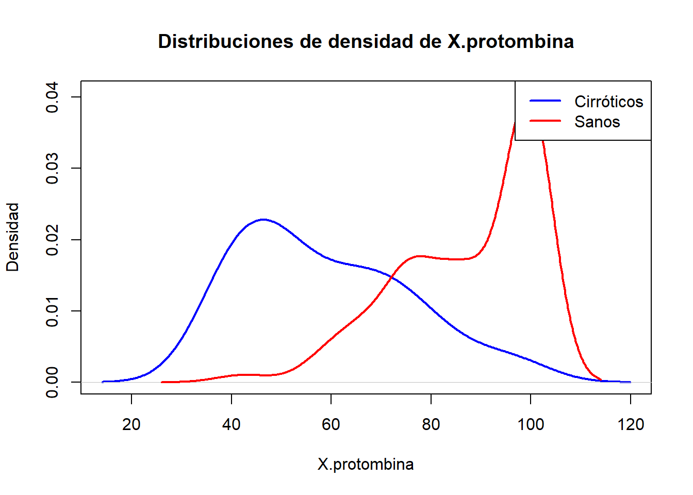
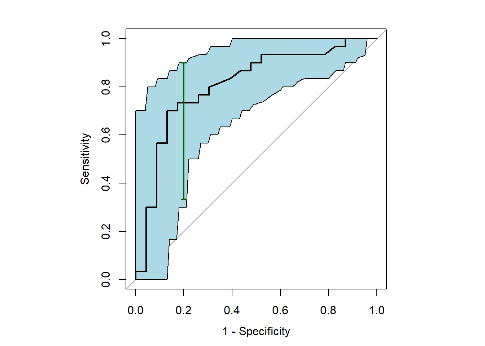
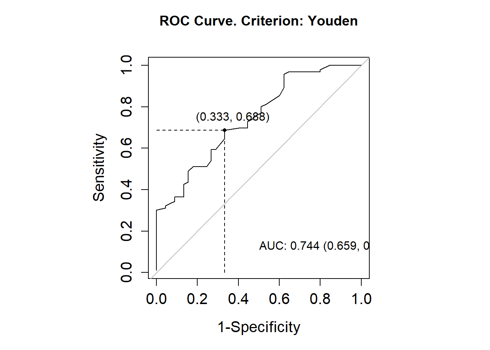
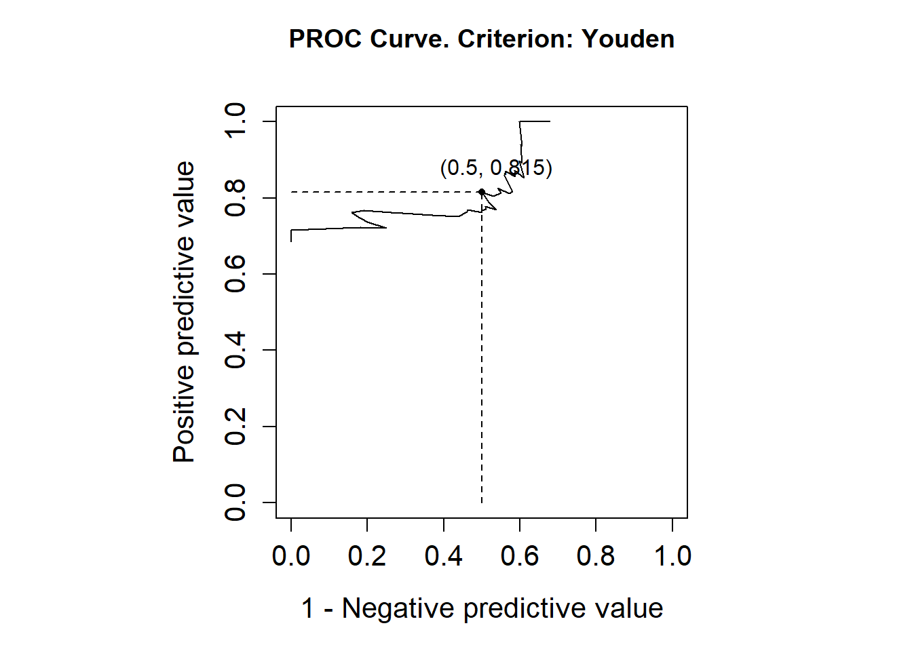
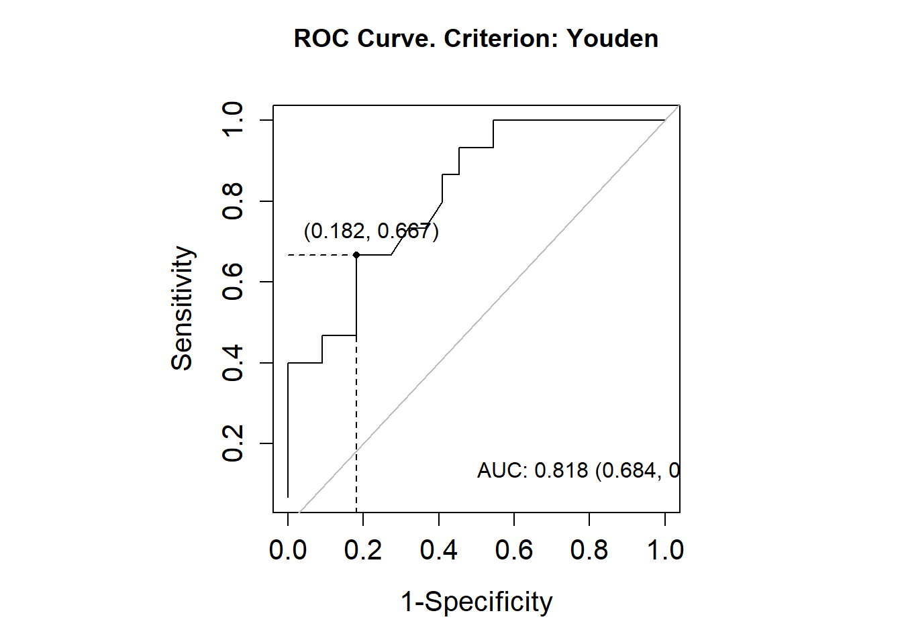
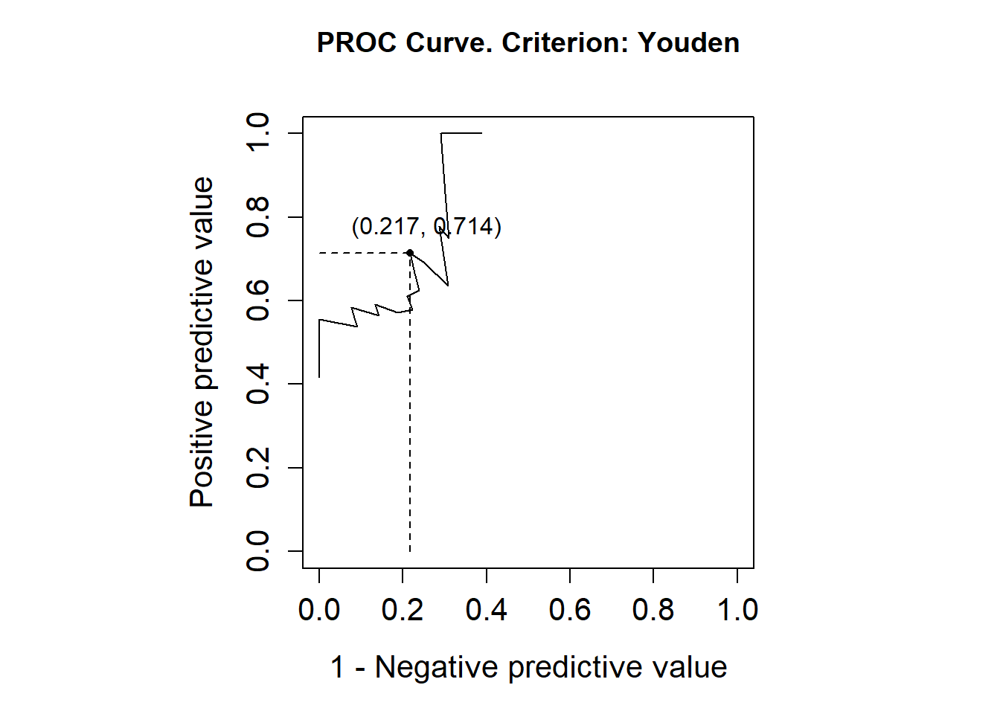
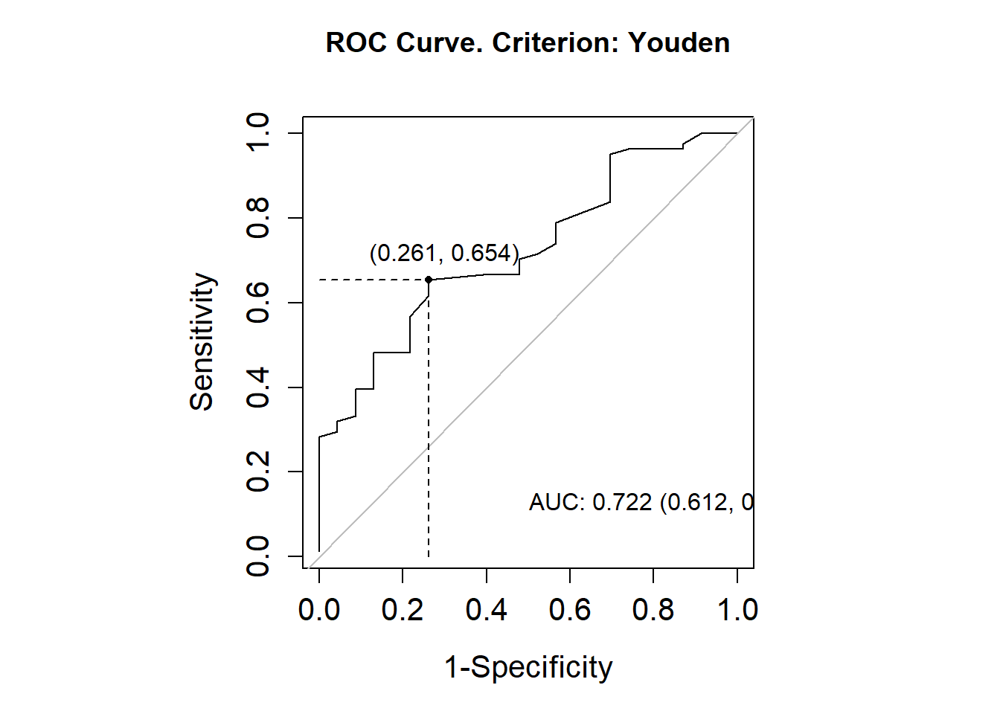
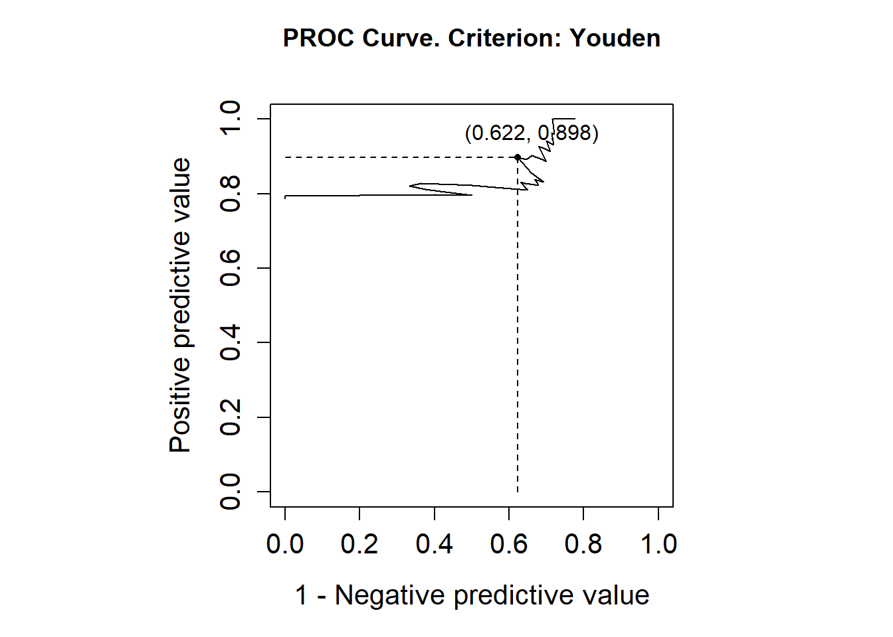

Se trata de una curva bidimensional donde para cualquier punto posible de la prueba calculamos la probabilidad de positivos en sanos y de negativos en enfermos.
Se utiliza para la comparación de biomarcadores.
En pruebas diagnósticas donde los resultados no son positivo/negativo.
Validacion de biomarcadores cuando los resultados de la prueba diagnóstica tienen varios niveles.
Por convenio, se establece que los valores de la prueba en enfermos son superiores que en individuos sanos. (en los ejercicios, en el default de R, etc.)
Definición Umbral: punto a partir del cual se decide que la prueba diagnóstica asigna un positivo.
- Si es un umbral a partir del cual hago una prueba invasiva, que sea alto.
- Si es un umbral a partir del cual hago una prueba no invasiva, barata, etc. puedo elegir un umbral bajo.
Se dicotomizan los resultados de la prueba diagnóstica en base a un treshold c.
Dado un valor c, la probabilidad de tener en los dos grupos un valor por encima de c:
- \(Se(c) = TPF = P(Y \ge c | D=1)\)
- \(1-Sp(c) = FPF =P(Y \ge c |D=0)\)
Se trata de elegir un punto de corte teniendo en cuenta el equilibrio (o el equilibrio deseado) entre los errores.
Probabilidad de tener en los enfermos un valor por encima de c y probabilidad de tener en los sanos un valor por encima de c.
Si c \(\rightarrow\) -inf => \(Se = 1\) y \(Sp=1\)
si c \(\rightarrow\) +inf => \(Se = 0\) y \(Sp=0\)
Se desea que una curva ROC distinguiese perfectamente entre sanos y enfermos (esto sería una prueba perfecta, ya que discrima sin errores).
Una prueba perfecta es quella donde la curva que representa la distribución de los resultados de los enfermos y la curva que representa la distribución de los resultados de los sanos son claramente diferenciables y espaciadas entre ellas.
Si las curva de densidad para D=0 y D=1 se solapan y son iguales, se trata de una prueba inutil.
Cuando representamos la curva ROC de dos pruebas diagnósticas podemos decir que una prueba es mejor que la otra si las curvas ROC no se cruzan y una está por encima de la otra.
Ejemplo 2.5.
Una prueba diagnóstica para la cirrosis consiste en medir el diámetro de hematíes (Y). Supongamos que en los individuos sin cirrosis Y sigue una distribución N(7.5,0.2) y en los cirróticos una N(8.5, 0.6).
Calculo para cada distribución la probabilidad de tener un valor menor a c.
Para c=6.
\(Se(6) = p(Y \ge 6 | D=1) = 1\)
\(1-sp(6) = p(Y \ge 6 | D=1) = 1\)
Para c=8.5.
\(Se(8.5) = p(Y \ge 8.5 | D=1) = 1\)
\(1-sp(8.5) = p(Y \ge 8.5 | D=1) = 0.5\)
Al dibujar la ROC el valor del umbral no aparece en la curva.
Para estudiar las propiedas de la curva ROC se varían valores de c entre [0, 1] y se trabaja con funciones de supervivencia.
Dado un punto de corte c : ROC(c) = “Probabilidad de que la respuesta del test en los enfermos sea superior a la respuesta máxima observada en los sanos con probabilidad (1-c).”
Cuando cambiamos las propiedades de la prueba diagnóstica mediante una transformacion creciente la ROC es la misma. Esto será algo que buscaremos cuando la transformación nos proporcione normalidad.
Interpretación.
La curva ROC representa la capacidad discriminadora de una prueba diagnóstica a lo largo de todos los posibles puntos de corte.
Es una medida global de precisión diagnóstica, independientemente del punto de corte y de la prevalencia de la enfermedad.
Es una guía en la selección del punto de corte en las pruebas diagnósticas.
Índices o medidas resumen la curva ROC:
AUC
Caso de uso. Eligiendo un par de resultados (uno de la muestra de sanos y otro de la muestra de enfermos) la probabilidad de clasificar correctamente cuando se asigna como sano aquel con menor valor en la prueba y como enfermo aquel que tiene mayor valor en la en la prueba es igual a AUC.
\(AUC = p(Y_D > Y_\overline{D})\)
Test perfecto: \(AUC=1\).
Test noinformativo: \(AUC=0.5\).
Dados dos test A y B tales que \(ROC_A(t) \ge ROC_(t), \forall t \in [0,1] \Rightarrow AUC_A \ge AUC_B\), pero no se cumple en ambas direcciones.
Si una prueba es más sensible que otra solo para algunos umbrales, diremos que la prueba es preferible solo en algunos casos.
pAUC
En casos donde las curvas ROC de dos pruebas diagnósticas se cruzan y las áreas bajo las curvas son similares.
El test B demuestra un mejor desempeño en el intervalo [0,0.25]. Este desempeño superior se debe a que la sensibilidad y especificidad de dicha prueba superan a las del test A en este rango. Sin embargo, a partir de este punto, la interpretación se invierte: el test A pasa a ser superior tanto en sensibilidad como en especificidad.
En general, no existe una prueba que supere consistentemente a la otra en todo el rango evaluado. Es útil considerar el área bajo la curva parcial para realizar comparaciones más específicas y establecer puntos de corte que sean coherentes con el comportamiento de ambas curvas en los distintos intervalos.
Índice de Youden
Algunas publicaciones lo defines como una distancia y otras lo definen como la mayor distancia.
Distancia entre mi curva ROC y la diagonal.
\(YI(c) = |Se(c) + Sp(c) - 1|\)
Test perfecto: \(max YI(c)= 1\).
Test noinformativo: \(YI(c)=0 \quad \forall \quad c\).
Dados dos test A y B tales que \(ROC_A(t) \ge ROC_(t), \forall t \in [0,1] \Rightarrow AUC_A \ge AUC_B\), pero no se cumple en ambas direcciones.z
Dependiendo de cuánto se conozca sobre la prueba diagnóstica a nivel estadístico, la forma de trabajar con la curva ROC será de una manera u otra.
Estimación de curvas ROC
En caso de conocer el comportamiento de la prueba diagnóstica (la distribución de los resultados) uso una metodología paramétrica (la cual es idonea si los grupos de sanos y enfermos se distribuyen normalmente o se pueden transformar para tener normalidad).
Eficaz con conjuntos de datos desequilibrados: En los conjuntos de datos en los que una clase domina significativamente, las métricas como la precisión pueden no proporcionar una imagen precisa. El AUC, que incorpora tanto el TPR como el FPR, es una métrica más fiable en estos casos.
Lo más habitual es tener una prueba diagnóstica donde solo tenemos una muestra y no tenemos información de la distribución de la prueba (de los resultados) que podamos usar en el modelo teórico.
Con el método empírico obtenemos curvas escaloanadas. Visualmente es feo y no es lo esperable, ya que estamos trabajando con una variable numerica. En tales casos aplicamos un suavizado.
Estimación paramétrica de curvas ROC
Distribuciones paramétricas conocidas para la prueba diagnóstica en las poblaciones de enfermos y sanos.
Cuanto mejor se ajusten los datos a las distribuciones mejores serán las conclusiones clínicas.
Distribuciones más populares: normales y lognormales
En caso de desconocer la media o varianza poblacionales pasamos a tener una estimación de la curva ROC construida a través de la estimación puntual de la media y la varianza con los datos muestrales.
Desconocer la distribucion de la prueba diagnóstica no impide poder hacer estimaciones puntuales para la sensibilidad y la especificidad.
La curva ROC es invariante ante transformaciones estrictamente crecientes. Decir que la curva ROC es binormal implica que, mediante alguna transformación \(h\) estrictamente creciente, \(h(Y_D)\) y \(h(Y_\overline{D})\) asumen distribuciones normales. (test de bondad de ajuste donde no rechazo normalidad)
Algunas transformaciones que pueden usarse son las de tipo Box-Cox.
- \(X^a : a \ne 0\), solo si la prueba diagnóstica puede tener solo resultados positivos.
- \(log(X)\)
ROC<-function(t, mu_D, mu_D_bar, sigma_D, sigma_D_bar){# pnorm( (mu_D - mu_D_bar) / sigma_D + (sigma_D_bar / sigma_D) * qnorm(t) )pnorm((mu_D-mu_D_bar)/sqrt(sigma_D_bar^2+sigma_D^2))}# Ejemplo de uso con valores específicost<-0.5# Valor del percentilmu_D<-8.5# Media de Dmu_D_bar<-7.5# Media de D_barsigma_D<-0.6# Desviación estándar de Dsigma_D_bar<-0.2# Desviación estándar de D_barROC_value<-ROC(t, mu_D, mu_D_bar, sigma_D, sigma_D_bar)ROC_value## [1] 0.9430769
Con el metodo binomal, siempre que tenemos información acerca de las respuestas de los dos grupos no tenemos una estimación del AUC, sino el AUC.
En el momento en que tenos que usar información adicional o estimar valores pasamos a tener una estimación del AUC.
En este caso al ser un dato exacto y no estimado no tenemos IC.
Interpretación. Eligiendo dos valores (uno de cada muestra) y asignando el valor más alto a los enfermo (por defecto los valores más altos se asignas como los casos) entonces la probabilidad de acierto es el area bajo la curva.
Un AUC estimado también tiene la misma interpretación que el AUC.
Si tengo estos dos valores y asigno el primero a un no cirrótio y el segundo a un sí cirrot, mi prob de acercar es 0.4.
elijo dos valores (uno en cada muestra) y asigno el valor mas alto a los enfermo (por defecto los valores mas altos para los casos) entonces la prob de acierto es el area bajo la curva
Estimación no paramétrica de curvas ROC
Se trata de casos donde solo tenemos información muestral: una muestra de resultados para los casos sanos y otra muestra de resultados para los casos enfermos.
Método empírico
Es el método no paramétrico más usado tradicionalmente para pruebas diagnósticas continuas y se basa en las distribuciones empíricas de las muestras de sanos y enfermos.
Para cada una de las muestras miro la proporción de casos que se encuentran por encima del punto de corte.
En casos donde la variable respuesta es un biomarcador con unidades de medida, muchas veces la máquina correspondiente da pocos decimales o incluso ninguno. En esta situación estamos chocando con la hipótesis de que es imposible que dos individuos tengan el mismo valor para una variable continua. (esto se refleja en la curva ROC y ya veremos cómo impacta)
Sea \(\{Y_{D_i}, i = 1, \dots, n_D\} \; \text{m.a.s.} \; Y_D \; m.a.s Y_D\) y sea \(\{Y_\overline{D_i}, i = 1, \dots, n_\overline{D_i}\} \; \text{m.a.s.} \; Y_\overline{D}\).
Para cada punto de corte c estimamos: \[\hat{\text{Se}}(c) = \frac{1}{n_D} \sum_{i=1}^{n_D} I\{Y_{D_i} \geq c\} = \frac{\# I\{Y_{D_i} \geq c\}}{n_D}\]
Ejemplo. (análogo al 2.6. así que ese no le incluyo.
Supongamos que queremos estimar con el método empiricio la curva ROC asociada a un biomarcador y que se ha observado la siguiente muestra de resultados del biomarcador en sanos y enfermos.
Ordenada la muestra de mayor a menor, tenemos saltos horizontales de longitud proporcional a la inversa del tamaño muestral de sanos y saltos verticales de longitud proporcional a la inversa del tamaño muestral de enfermos.
¿Dónde la distancia vertical es máxima? En (0, 2/5) \(\rightarrow\) Esto es la estiamcion del índice de Youden.
¿a qué corresponde esa poligonal? a los empates. ¿eing?
Si miras la teoria que hay detras de todo esto pues ves que esas cosas dependen de los empates.
el AUC estimado es 0.78, sacado a mano sumando el área de los polígonos del dibujo.
¿Los valores observados están en algún sitio en la curva? Nop, la curva no representa los valores (si en lugar de números hubieran sido letras ordenadas alfabéticamente hubiera sido el mismo resultado). Solo es necesario saber el orden de los valores y saber si los valores se repiten. Ni los valores ni el punto del corte a partir del cual decimos que está enfermo se ven reflejados en la curva ROC.
La curva ROC nos refleja a nivel global cómo se comporta el biomarcador pero no indica nada sobre si discrimina bien o no. Para ver si discrimina bien o no se tiene que mirar el AUC. (cuanto más cercano a 1 mejor sirve para discriminar)
set.seed(602)n<-100Ysan3<-round(rgamma(n, 10, 3), digits=3)Yenf3<-round(rgamma(n, 12, 3), digits=3)roc3<-pROC::roc(controls =Ysan3, cases =Yenf3, partial.auc =c(0,0.2))roc3# pos se supone que debería dar 0.686
Call:
roc.default(controls = Ysan3, cases = Yenf3, partial.auc = c(0, 0.2))
Data: 100 controls < 100 cases.
Partial area under the curve (specificity 0.2-0): 0.197
Cambiando la semilla, AKA cambiando la muestra, las estimaciones de AUC cambian. Aumentando el tamaño muestral obvio que también.
Ejemplo 2.7.
Se disponen de datos sobre las intensidades relativas de la expresión de un determinado gen para una muestra de 23 tejidos de ovarios sanos y para 30 de tejidos con tumor .
¿Es el porcentaje de protombina un buen marcador de cirrosis? Los datos disponibles corresponden a una muestra de 145 individuos sanos y 39 cirróticos.
Representamos histogramas y distribuciones de densidad de los datos muestrales para hacernos una idea de si vamos a tener un biomarcador que nos ayude a discriminar o no.
densidad_cirroticos<-density(cirroticos$X.protombina[cirroticos$cirroticos.sanos==1])densidad_sanos<-density(cirroticos$X.protombina[cirroticos$cirroticos.sanos==0])plot(densidad_cirroticos, main ="Distribuciones de densidad de X.protombina", xlab ="X.protombina", ylab ="Densidad", col ="blue", lwd =2, ylim =range(0, densidad_cirroticos$y, densidad_sanos$y))lines(densidad_sanos, col ="red", lwd =2)legend("topright", legend =c("Cirróticos", "Sanos"), col =c("blue", "red"), lwd =2)

#Ref: Estimación no paramétrica de la función de densidad. Antonio Miñarro 1998
Aparentemente los sanos tienen valores superiores a los cirróticos y esto es al revés que muchos default. Intercambaimos los valores de casos y controles.
Los “casos” siempre son los que tienen mayor valor, en este caso los “casos” son los sanos.
Me parecía poco intuitivo ese valor del área bajo la curva (ROC) al observar cómo se solapan las distribuciones. Sin embargo, es cierto que lo que realmente se solapan son los rangos en los que se distribuyen los datos. Por debajo del punto donde las distribuciones se cruzan, la densidad de los datos en el grupo de los sanos es muy baja.
Suavizado tipo núcleo
Ha dicho algo de nucleos y suavizado.
La curva ROC empírica es una función escalonada a pesar de que la curva ROC es continua. Además, parece razonable construir estimadores que también sean continuos. Estos se pueden obtener de forma no paramétrica mediante técnicas de suavización, por ejemplo de tipo núcleo:
En R nos deja elegir el nucleo pero no la ventana. la ventana tiene aplicacion en diagnostico por imagen
Existen varios métodos para el suavizado.
Binormal. Se utiliza una aproximación normal para la densidad de los datos. La curva ROC se estima bajo la suposición de que los datos provienen de distribuciones normales (binormalidad), con medias y varianzas estimadas a partir de la muestra.
Densidad. Se estima la densidad de los datos utilizando un núcleo considerado adecuado. Aunque se ha mencionado que es “perfecto”, no queda claro a qué se refiere exactamente dicha afirmación.
Best-Fit Distribution. Es la distribución que mejor se ajusta a los datos, determinada mediante el método de máxima verosimilitud.
El AUC es el mismo porque se estima utilizando la distribución empírica. La versión normalizada se emplea únicamente para representar gráficamente la curva ROC, ya que proporciona una visualización más intuitiva. Lo que hace es trazar la curva de manera más “estética”, generando una forma más continua y suave, en contraste con la versión empírica, que tiende a ser más poligonal y escalonada.
Intervalos y bandas de confianza
La variabilidad muestral para la curva ROC empírica puede obtenerse desde varios puntos de vista:
Fijando el punto de corte (\(c\)) y obtener la variabilidad en el correspondiente punto de la curva ROC, \((1-\widehat{Sp}(c), \; \widehat{Se})\).(Regiones de confianza en los tests binarios)
Fijando la especificidad o fijando \(1-Sp\) (\(t\)) y considerar la variabilidad de \(\widehat{ROC}(t)\) que ocurre en la dirección vertical.
Fijando la sensibilidad y obtener la variabilidad en la dirección horizontal.
Considerar la curva entera y cuantificar la variabilidad a través de bandas de confianza.
Cuando la muestra es pequeña, solo es posible “repetir el experimento” utilizando el método bootstrap, generando nuevas muestras (tengo muestas de sanos y de enfermos) de igual tamaño que las originales, respetando la proporción entre los grupos de sanos y enfermos.
Fijado, se puede calcular la sensibilidad y la especificidad correspondientes para cada muestra bootstrap, lo que permite estimar una región de confianza para estos valores.
Si se mantiene fija una de las dimensiones (tanto la sensibilidad como la especificidad), es posible observar cómo varía la otra dimensión (en este caso, la especificidad) y determinar el rango en el que se encuentra, es decir, “fijada la sensibilidad, ver de qué punto a qué punto varía la especificidad”.
[aquí ha hecho un dibujito muy boniko que a ver si lo replico.]
La diferencia entre las bandas de confianza obtenidas mediante el método bootstrap y las obtenidas a través de la aproximación asintótica es muy pequeña.
Intervalos de confianza para las medidas resumen
Suelen obtenerse utilizando bootstrap.
Se tienen expresiones analíticas para la varianza asintótica del \(\widehat{AUC}\) empírico. Para muestras grandes:
par(pty="s")plot(roc1, legacy.axes =TRUE)banda<-ci.se(roc1, sp=seq(0, 1, 0.01))plot(banda, type ="shape", col="lightblue")ICaucd<-ci.auc(roc1, method="d")print(ICaucd)## 95% CI: 0.6843-0.9331 (DeLong)ICaucb<-ci.auc(roc1, method="b")print(ICaucb)## 95% CI: 0.6826-0.9188 (2000 stratified bootstrap replicates)print(roc1$auc)## Area under the curve: 0.8087# IC fijada la especificidad en 0.8IC_Se80<-ci.se(roc1, sp=0.8)print(IC_Se80)## 95% CI (2000 stratified bootstrap replicates):## sp se.low se.median se.high## 0.8 0.3333 0.7333 0.9plot(IC_Se80, col="darkgreen", lwd=2)

Comparación de curvas ROC
Las comparaciones pueden hacerse utilizando AUC, bandas de confianza, forma de la curva ROC, fijando una especificidad (o sensibilidad)… La más utilizada se basa en el AUC. (hay varios testsimplementados en R)
Curvas ROC pareadas: curvas estimadas con los mismos sujetos. Existen varios test para comparar curvas pareadas (Hanley and McNeil 1983, Delong et al. 1988, Venkatraman and Begg 1996, Bandos et al. 2005, Braun andAlonso 2008, …)
Curvas ROC no pareadas: curvas estimadas con diferentes sujetos. (Hanley and McNeil 1982, Venkatraman 2000, …)
lleva emparejado dos biomarcadores en dos muestras pareaadas o no pareadas, dependiendo del tipo de muestras usaremos un tipo de comparación y otra.
El estimador que se suele usar es la diferencia de las AUC, normalizado para tener una distribucion asintotica.
Sean dos pruebas diagnósticas A, B y sean \(ROC_A\) y \(ROC_B\) sus respectivas cirvas ROC. Entonce, \(H0: ROC_A = ROC_B\).
El estadístico \(\frac{\Delta \widehat{\text{AUC}}}{\sqrt{\text{Var}(\Delta \widehat{\text{AUC}})}} \approx_{H_0} N(0,1)\), siendo \(\Delta \widehat{\text{AUC}} = \widehat{\text{AUC}}_A - \widehat{\text{AUC}}_B\).
Probabilidad acumulada: densidad.
Probabilidad de colas: probabilidad de supervivencia.
Ejemplo 2.9.
El paquete pROC contiene una base de datos (aSAH) de 141 pacientes con hemorragia subaracnoide aneurísmica (“aneurysmal subarachnoid hemorrhage”). Queremos comparar los biomarcadores s100b y wfns.
A parte de comparar los resultados de las curvas ROC es necesario saber si se pueden considerar iguales o no.
Al comparar dos curvas, podemos determinar si son diferentes a partir del p-valor asociado a la hipótesis nula en un tipo de test. Si este p-valor es menor que el nivel de significancia que hayamos definido, concluimos que las curvas no son iguales. Por ejemplo, usando el método de DeLong, el cálculo del estadístico y su distribución asintótica son diferentes, pero llegamos a la misma conclusión. Lo mismo sucede con el método de Venkatraman: aunque el enfoque cambia, el resultado final es consistente.
Comparación de las curvas ROC pareadas usando el test de Delong (por defecto).
roc.test(roc_wfns, roc_wfns)## ## DeLong's test for two correlated ROC curves## ## data: roc_wfns and roc_wfns## Z = 0, p-value = 1## alternative hypothesis: true difference in AUC is not equal to 0## 95 percent confidence interval:## 0 0## sample estimates:## AUC of roc1 AUC of roc2 ## 0.8236789 0.8236789
Comparación de las curvas ROC pareadas usando bootstrap.
roc.test(roc_wfns, roc_wfns, method="bootstrap", boot.n=1000)## ## Bootstrap test for two correlated ROC curves## ## data: roc_wfns and roc_wfns## D = 0, boot.n = 1000, boot.stratified = 1, p-value = 1## alternative hypothesis: true difference in AUC is not equal to 0## sample estimates:## AUC of roc1 AUC of roc2 ## 0.8236789 0.8236789
Comparación de las curvas ROC pareadas usando el test de Venkatraman.
roc.test(roc_wfns, roc_s100b, method ='venkatraman')## ## Venkatraman's test for two paired ROC curves## ## data: roc_wfns and roc_s100b## E = 578, boot.n = 2000, p-value = 0.0205## alternative hypothesis: true difference in at least one ROC operating point is not equal to 0
Comparación de las curvas ROC pareadas fijando la especificidad.
roc.test(roc_wfns, roc_s100b, method="specificity", specificity=0.9)## ## Specificity test for two correlated ROC curves## ## data: roc_wfns and roc_s100b## D = 1.3199, boot.n = 2000, boot.stratified = 1, p-value = 0.1869## alternative hypothesis: true difference in sensitivity at 0.9 specificity is not equal to 0## sample estimates:## AUC of roc1 AUC of roc2 ## 0.8236789 0.7313686
Cuando fijamos una especificidad de 0.9, contrastamos si las sensibilidades de las dos pruebas son iguales (\(Se_A = Se_B\)). Con un p-valor de 0.2034, aceptamos la hipótesis nula, lo que implica que no tenemos evidencia suficiente para afirmar que las sensibilidades son diferentes a ese nivel de especificidad.
Comparación de las curvas ROC pareadas fijando la sensibilidad.
roc.test(roc_wfns, roc_s100b, method="sensitivity", sensitivity=0.9)## ## Sensitivity test for two correlated ROC curves## ## data: roc_wfns and roc_s100b## D = 3.2347, boot.n = 2000, boot.stratified = 1, p-value = 0.001218## alternative hypothesis: true difference in specificity at 0.9 sensitivity is not equal to 0## sample estimates:## AUC of roc1 AUC of roc2 ## 0.8236789 0.7313686
En un segundo análisis, fijamos la sensibilidad en 0.9 y contrastamos si las especificidades de las dos pruebas coinciden. En este caso, obtenemos un p-valor < 0.001, lo que nos permite descartar la hipótesis nula y concluir que las especificidades no son iguales.
Estos resultados se respaldan tanto por los tests estadísticos como por el marco teórico que garantiza su validez. Sin embargo, también es útil obtener una primera impresión visual observando las curvas ROC.
“Curiosamente”, la especificidad de 0.9 coincide con el punto donde las curvas ROC se cruzan. Por eso, a ese nivel de especificidad, no se pueden diferenciar las sensibilidades.
¿Para una especificidad de 0.9, las dos pruebas tienen sensibilidades distintas?
Parece que no, ya que el p-valor es 0.2, lo que indica que no hay evidencia suficiente para concluir que las sensibilidades de las dos pruebas son diferentes cuando se fija una especificidad de 0.9.
Sin embargo, si aplico bootstrap haciendo el análisis al revés (fijando la sensibilidad en 0.9), el resultado cambia: no puedo aceptar que las dos pruebas tengan la misma especificidad en este caso.
No existe evidencia suficiente para afirmar que, con una especificidad de 0.9, las dos sensibilidades son iguales.
Elección del punto de corte c
Valor que determina que la prueba diagnóstica asigne como positivo o negativo un resultado de la prueba. Este valor es elegido bajo un tipo de criterio.
Tener una estimacion del AUC, y sobre todo su IC, nos da una pista para decidir qué tipo de prueba tenemos.
AUC
Categoría
Explicación
< 0.6
Prueba no útil
“Con un AUC de 0.55, la prueba tiene un rendimiento inferior al azar, lo que sugiere que no es adecuada para diferenciar entre pacientes con la condición y aquellos sin ella. En este caso, podría no justificar el uso de este test en la práctica clínica.”
0.7 - 0.8
Buena
“El AUC de 0.75 indica que la prueba tiene una capacidad razonablemente buena para distinguir entre los pacientes con la enfermedad y aquellos sin ella, pero aún existe un margen de mejora. Sería adecuado usarla, aunque se debe considerar si otros tests podrían ser más eficaces.”
0.8 - 0.9
Muy buena
“Con un AUC de 0.85, esta prueba muestra una excelente capacidad para identificar a los pacientes con la enfermedad. Esto sugiere que podría ser un test de gran valor para el diagnóstico, especialmente cuando se requiere alta precisión en la identificación de casos positivos.”
0.9 - 1
Excelente
“Un AUC de 0.95 indica que la prueba tiene una capacidad excelente para diferenciar entre los pacientes con y sin la enfermedad. Este resultado sugiere que podríamos considerar esta prueba como un estándar en la práctica clínica para asegurar una detección precisa y temprana.”
En casos donde \(\widehat{AUC}\) junto con sus intervalos del IC es claramente menor a 0.6 podemos obviar esa curva ROC y no es necesario hacer ninguna comparativa con otra.
Maximizar el índice de Unión. \(IU(c)=|Se(c)-AUC|+|Sp(c)-AUC|\)
Maximizar el índice de Liu: \(IL(c)=|Se(c)-AUC|+|Sp(c)-AUC|\)
Todas las estrategias se centran en maximizar tanto la sensibilidad como la especificidad dentro de los límites que ofrece la prueba. Si la sensibilidad no supera un valor x, por más que intentemos optimizarla, no lograremos un aumento significativo.
Ejemplo 2.10.
El paquete Optimal Cutpoints contiene la base de datos elas (Leukocyte Elastase) con 141 observaciones correspondientes a las variables elas, status y gender. Los datos corresponden a un estudio llevado a cabo para evaluar la utilidad de la elastasa leucocitaria en la diagnosis de la enfermedad arterial coronaria (CAD). Elegimos el punto de corte tal que maximice el índice de Youden y el punto de corte que iguale sensibilidad y especificidad.
library(OptimalCutpoints)data(elas)summary(elas)## elas status gender ## Min. : 5.00 Min. :0.0000 Female: 37 ## 1st Qu.: 27.00 1st Qu.:0.0000 Male :104 ## Median : 39.00 Median :1.0000 ## Mean : 43.28 Mean :0.6809 ## 3rd Qu.: 51.00 3rd Qu.:1.0000 ## Max. :163.00 Max. :1.0000pcorte_Youden<-optimal.cutpoints(X ="elas", status ="status", tag.healthy=0, methods="Youden", data =elas, pop.prev=NULL, ci.fit =TRUE)summary(pcorte_Youden)## ## Call:## optimal.cutpoints.default(X = "elas", status = "status", tag.healthy = 0, ## methods = "Youden", data = elas, pop.prev = NULL, ci.fit = TRUE)## ## Area under the ROC curve (AUC): 0.744 (0.659, 0.828) ## ## CRITERION: Youden## Number of optimal cutoffs: 1## ## Estimate 95% CI lower limit 95% CI upper limit## cutoff 37.0000000 - -## Se 0.6875000 0.5848184 0.7782474## Sp 0.6666667 0.5104964 0.7999943## PPV 0.8148148 0.6964499 0.8752971## NPV 0.5000000 0.3903427 0.6666588## DLR.Positive 2.0625000 1.3354513 3.1853698## DLR.Negative 0.4687500 0.3265302 0.6729134## FP 15.0000000 - -## FN 30.0000000 - -## Optimal criterion 0.3541667 - -plot(pcorte_Youden)

## Press return for next page....

¿La variable “elas” se distribuye de una forma similar en hombres que en mujeres? Dibujemos las densidades estimadas de “elas” para hombres y mujeres, distinguiendo sanos y enfermos.
Consideramos un resultado positivo cuando es mayor a 37, pero este punto de corte, por sí solo, no proporciona suficiente información sobre el desempeño de la prueba. Analizamos el AUC (Área Bajo la Curva) y obtuvimos un valor de 0.74. Este valor sugiere que no podemos descartar la prueba, ya que, según su intervalo de confianza (IC), en ocasiones puede considerarse aceptable.
Interpretación del AUC: Asignando los valores más altos a los pacientes enfermos, se estima que la prueba acierta en el 74 % de los casos. No obstante, este porcentaje puede variar entre un 66 % y un 62 %, según el intervalo de confianza.
El porcentaje de acierto global de la prueba es del 68 %. Sin embargo, el intervalo de confianza (0.5848-0.7782) incluye valores cercanos al azar (0.5), lo cual indica un desempeño inconsistente. Aunque el límite superior del intervalo se acerca a un valor moderadamente bueno, está muy lejos del ideal (1.0). Esto sugiere que la prueba no es confiable.
Hubiera sido útil incluir un análisis descriptivo más detallado para contextualizar estos resultados.
Inicialmente, analizamos los datos agrupados, pero ahora hemos optado por separar los resultados según el sexo, distinguiendo entre hombres y mujeres.
# Datos para mujeresdatosmuj<-subset(elas, gender=="Female")mujsana<-subset(datosmuj, status==0)mujenf<-subset(datosmuj, status==1)# Datos para hombresdatoshom<-subset(elas, gender=="Male")homsano<-subset(datoshom, status==0)homenf<-subset(datoshom, status==1)
library(OptimalCutpoints)pcorte_Youden<-optimal.cutpoints(X ="elas", status ="status", tag.healthy=0, methods="Youden", data =datosmuj, pop.prev=NULL, ci.fit =TRUE)summary(pcorte_Youden)## ## Call:## optimal.cutpoints.default(X = "elas", status = "status", tag.healthy = 0, ## methods = "Youden", data = datosmuj, pop.prev = NULL, ci.fit = TRUE)## ## Area under the ROC curve (AUC): 0.818 (0.684, 0.952) ## ## CRITERION: Youden## Number of optimal cutoffs: 1## ## Estimate 95% CI lower limit 95% CI upper limit## cutoff 46.0000000 - -## Se 0.6666667 0.3838037 0.8817589## Sp 0.8181818 0.5971542 0.9481327## PPV 0.7142857 0.4516107 0.9031160## NPV 0.7826087 0.5285570 0.9359958## DLR.Positive 3.6666667 1.4096667 9.5373214## DLR.Negative 0.4074074 0.1939348 0.8558589## FP 4.0000000 - -## FN 5.0000000 - -## Optimal criterion 0.4848485 - -plot(pcorte_Youden)

## Press return for next page....

library(OptimalCutpoints)pcorte_Youden<-optimal.cutpoints(X ="elas", status ="status", tag.healthy=0, methods="Youden", data =datoshom, pop.prev=NULL, ci.fit =TRUE)summary(pcorte_Youden)## ## Call:## optimal.cutpoints.default(X = "elas", status = "status", tag.healthy = 0, ## methods = "Youden", data = datoshom, pop.prev = NULL, ci.fit = TRUE)## ## Area under the ROC curve (AUC): 0.722 (0.612, 0.831) ## ## CRITERION: Youden## Number of optimal cutoffs: 1## ## Estimate 95% CI lower limit 95% CI upper limit## cutoff 38.0000000 - -## Se 0.6543210 0.5404147 0.7565737## Sp 0.7391304 0.5159480 0.8977139## PPV 0.8983051 0.7686835 0.9355009## NPV 0.3777778 0.2738718 0.6528595## DLR.Positive 2.5082305 1.2382379 5.0807845## DLR.Negative 0.4676834 0.3180320 0.6877538## FP 6.0000000 - -## FN 28.0000000 - -## Optimal criterion 0.3934514 - -plot(pcorte_Youden)
## Press return for next page....
library(OptimalCutpoints)pcorte_SpEqualSe<-optimal.cutpoints(X ="elas", status ="status", tag.healthy=0, methods="SpEqualSe", data =datosmuj, pop.prev=NULL, ci.fit =TRUE)summary(pcorte_Youden)## ## Call:## optimal.cutpoints.default(X = "elas", status = "status", tag.healthy = 0, ## methods = "Youden", data = datoshom, pop.prev = NULL, ci.fit = TRUE)## ## Area under the ROC curve (AUC): 0.722 (0.612, 0.831) ## ## CRITERION: Youden## Number of optimal cutoffs: 1## ## Estimate 95% CI lower limit 95% CI upper limit## cutoff 38.0000000 - -## Se 0.6543210 0.5404147 0.7565737## Sp 0.7391304 0.5159480 0.8977139## PPV 0.8983051 0.7686835 0.9355009## NPV 0.3777778 0.2738718 0.6528595## DLR.Positive 2.5082305 1.2382379 5.0807845## DLR.Negative 0.4676834 0.3180320 0.6877538## FP 6.0000000 - -## FN 28.0000000 - -## Optimal criterion 0.3934514 - -plot(pcorte_Youden)
## Press return for next page....
library(OptimalCutpoints)pcorte_SpEqualSe<-optimal.cutpoints(X ="elas", status ="status", tag.healthy=0, methods="SpEqualSe", data =datoshom, pop.prev=NULL, ci.fit =TRUE)summary(pcorte_Youden)## ## Call:## optimal.cutpoints.default(X = "elas", status = "status", tag.healthy = 0, ## methods = "Youden", data = datoshom, pop.prev = NULL, ci.fit = TRUE)## ## Area under the ROC curve (AUC): 0.722 (0.612, 0.831) ## ## CRITERION: Youden## Number of optimal cutoffs: 1## ## Estimate 95% CI lower limit 95% CI upper limit## cutoff 38.0000000 - -## Se 0.6543210 0.5404147 0.7565737## Sp 0.7391304 0.5159480 0.8977139## PPV 0.8983051 0.7686835 0.9355009## NPV 0.3777778 0.2738718 0.6528595## DLR.Positive 2.5082305 1.2382379 5.0807845## DLR.Negative 0.4676834 0.3180320 0.6877538## FP 6.0000000 - -## FN 28.0000000 - -## Optimal criterion 0.3934514 - -plot(pcorte_Youden)

## Press return for next page....

Determinación de tamaños muestrales
[faltan dos slides que ni me he leído]
Forma de proceder:
Calculamos los tamaños utilizando las aproximaciones a la distribución normal previas.
Mediante simulación comprobamos si alcanzamos o no la potencia deseada. En caso negativo, incrementamos los tamaños hasta obtener la potencia fijada.
[Ejemplo 2.11.]
La sensibilidad y especificidad del test urinario para la clamidia se esperan que sean 0.9 y 0.95, respectivamente. Debe mostrarse que al menos se consiguen sensibilidad y especificidad de 0.75 y 0.8, respectivamente, para considerar el test urinario en futuras evaluaciones. Se trata de determinar a cuántas personas con clamidia y a cuántas sin clamidia hay que aplicarle el test para conseguir el objetivo con una potencia del 90 %.


{kind=link}